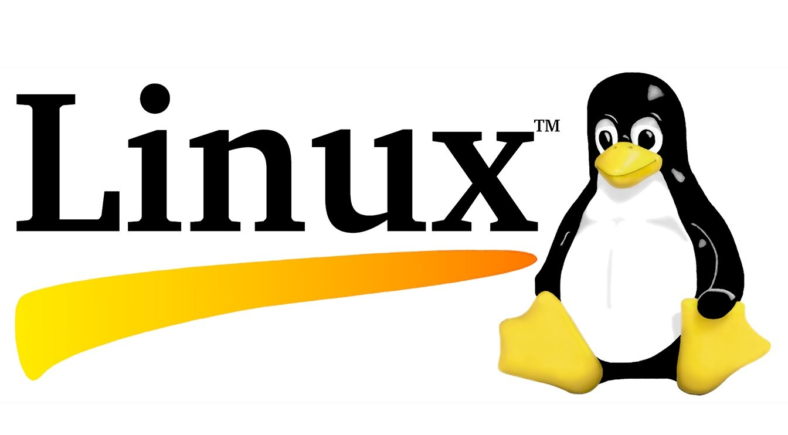

GNU/Linux (también conocido informalmente como Linux, y apocopado como Lignux para diferenciarlo de otros sistemas que usan tal núcleo) es un sistema operativo libre tipo Unix POSIX; multiplataforma, multiusuario y multitarea. El sistema es la combinación de varios proyectos, entre los cuales destacan GNU (encabezado por Richard Stallman y la Free Software Foundation) y el núcleo Linux (encabezado por Linus Torvalds). Su desarrollo es uno de los ejemplos más prominentes de software libre: todo su código fuente puede ser utilizado, modificado y redistribuido libremente por cualquiera, bajo los términos de la GPL (Licencia Pública General de GNU) y otra serie de licencias libres.
El proyecto GNU, iniciado en 1983 por Richard Stallman, tiene el objetivo de crear un "sistema de software compatible con Unix compuesto enteramente de software libre". El trabajo comenzó en el año 1984. Más tarde, en 1985, Stallman fundó la Free Software Foundation para financiar el desarrollo de GNU, y escribió la Licencia Pública General de GNU (GNU GPL) en 1989. A principios de la década de 1990, muchos de los programas que se requieren en un sistema operativo (como bibliotecas, compiladores, editores de texto, un shell Unix, y un sistema de ventanas) ya se encontraban en operación. Sin embargo otros elementos como los controladores de dispositivos y los daemons estaban incompletos.
Dentro del segmento de las supercomputadoras, a noviembre de 2017, el uso de este sistema ascendió al 100% de las computadoras más potentes del mundo por su confiabilidad, seguridad y libertad para modificar el código. De acuerdo con TOP500.org, que lleva estadísticas sobre las 500 principales supercomputadoras del mundo, a noviembre de 2017: las 500 usaban una distribución basada en GNU/Linux.
Algunas Distribuciones:
Ubunu
Es una de las más utilizadas junto con Debian. Fue desarrollada y mantenida por la empresa Canonical, se orienta a usos generales y se caracteriza por su compatibilidad de software y facilidad de uso equiparable a Mac OS X o Windows. Cuenta con varias versiones, entre las que destacan: Ubuntu Desktop, Xubuntu, Lubuntu y Ubuntu Server.
Fedora
Distribución para propósitos generales, que se caracteriza por ser estable y seguro, la cual es desarrollada y mantenida por la empresa Red Hat y una comunidad internacional de ingenieros, diseñadores gráficos y usuarios que informan de fallos y prueban nuevas tecnologías. Sus usos se orientan más al desarrollo de software y servidores